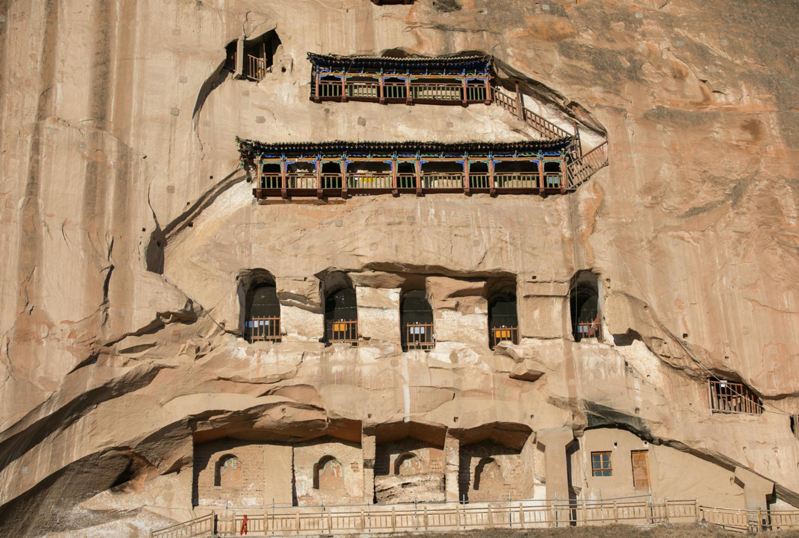

旅游攻略
最佳旅游时间
张掖的最佳旅游时间是6月至9月，此时气候宜人，风景秀丽，适合户外活动和观光旅游。 春季（3-5月）和秋季（10-11月）也是不错的选择，此时气温适中，游客较少。
交通指南
张掖有机场和火车站，交通十分便利。市内有公交车和出租车，也可以租车自驾。 前往各个景区可以选择包车或参加旅行团，方便快捷。
旅游提示
张掖地处高原，紫外线较强，需注意防晒。昼夜温差较大，需携带保暖衣物。 部分景区海拔较高，可能会有高原反应，需适当休息，避免剧烈运动。

探索张掖的自然奇观和人文遗产
张掖的最佳旅游时间是6月至9月，此时气候宜人，风景秀丽，适合户外活动和观光旅游。 春季（3-5月）和秋季（10-11月）也是不错的选择，此时气温适中，游客较少。
张掖有机场和火车站，交通十分便利。市内有公交车和出租车，也可以租车自驾。 前往各个景区可以选择包车或参加旅行团，方便快捷。
张掖地处高原，紫外线较强，需注意防晒。昼夜温差较大，需携带保暖衣物。 部分景区海拔较高，可能会有高原反应，需适当休息，避免剧烈运动。